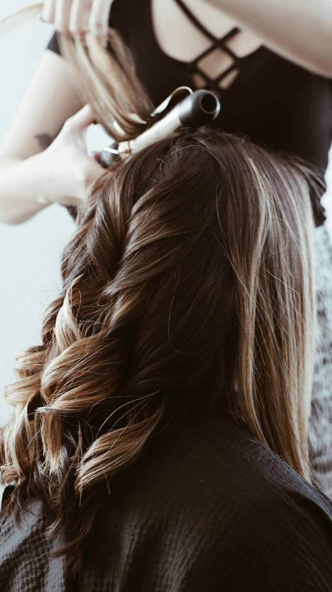
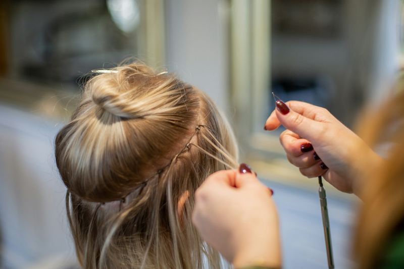
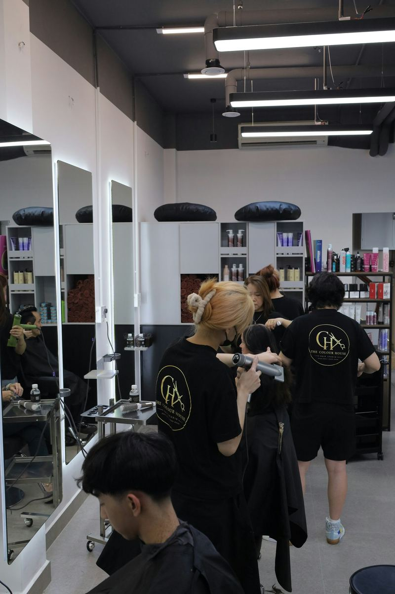
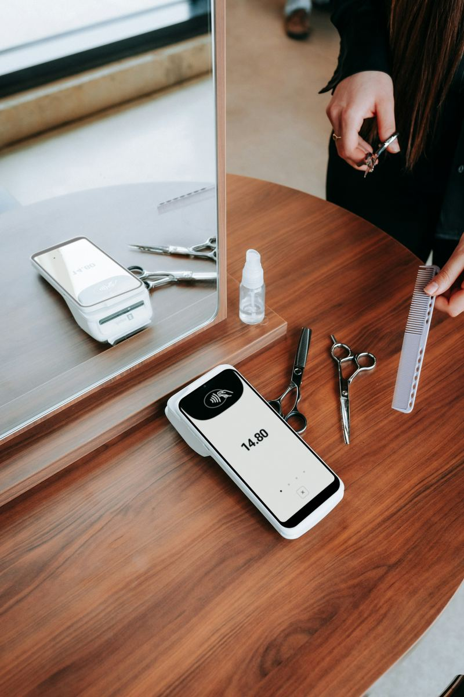

Prodlužování vlasů
Delší a hustší vlasy, které vypadají jako Vaše vlastní.
Kadeřnictví Kateřina Salamon na Jičínské 14 v Příboře. Dámské, pánské i dětské střihy, prodlužování vlasů, svatební a společenské účesy.
Po–čt 7:30–18, pá 7:30–17

Vyberte, jak dlouhé vlasy máte teď a jaké byste chtěla. Ukážeme, o kolik je prodloužíme.
+23 cm prodloužení
Přesnou délku, odstín a počet pramenů domluvíme na konzultaci.
Domluvit konzultaciPro celou rodinu, od dětí po svatební účes.

Delší a hustší vlasy, které vypadají jako Vaše vlastní.

Zkouška účesu předem, ať je v den D všechno v klidu.

Střih, barva, foukaná.

Rychle a s trpělivostí.
4,8 z 5
hodnocení zákazníků na Firmy.cz